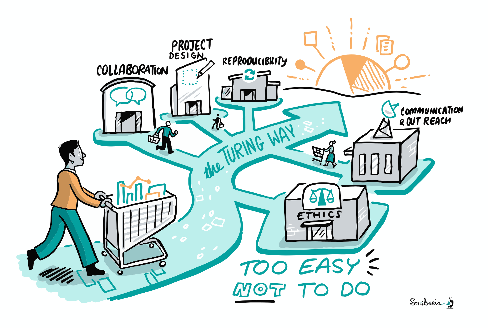
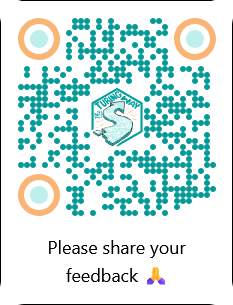
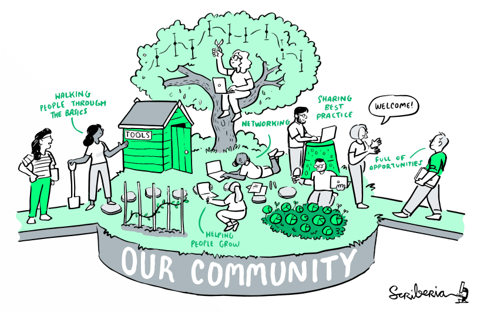

Build a Jupyter Book
with The Turing Way

Angus
Arielle
Chris
Franklin
Jim
Kirstie
Robert
Rowan
| Time | Activity |
|---|---|
| 09:00 | Introduction |
| 09:20 | Installation |
| 09:30 | Jupyter Book Showcase |
| 09:45 | Jupyter Book Fundamentals |
| 10:30 | Coffee Break ☕️ |
| 10:45 | Executable Content and Building a PDF |
| 11:20 | Advanced MyST Showcase |
| 11:40 | Join us! |
| 12:00 | Close and Lunch 🍽️ |
Installing Jupyter Book
next.jupyterbook.org/start/install
$ pip install "jupyter-book>=2.0.0a0"
$ npm install -g "jupyter-book@>=2.0.0-a0"
Jupyter Book
Create documents and knowledge bases that are reusable, reproducible, and interactive.
- Features for beautiful typesetting, in many domains
- Builds from MyST Markdown or Jupyter Notebooks
Jupyter Book
Superpowers
- Simple to use, easy for users to extend
- Simple to use, easy for developers to extend
- Content that is canonical and machine readable
- Content that is modular and composable
- Computation as a first-class citizen
- Led by an open community
Jupyter Book
Executable content
- Jupyter Notebooks
-
code-cellblocks in Markdown -
Inline statements using
evalin Markdown
# Title
```{code-cell} python
hello = "hello"
there = "there"
phrase = f"{hello}, {there}!"
print(phrase)
```
# Title
1 + 1 is {eval}`1 + 1`
Executing
- Before build (for notebooks)
- At build time
- Live in a browser
Jupyter Book
More features!
- Plugins
- Cross-book references and embedding
- Multiple export formats (HTML, pdf, docx, JATS)
Jupyter Book
Jupyter Book 1
MyST ParserSphinx
Jupyter Book 2
mystmdJupyter Book
doi: 10.25080/hwcj9957The Turing Way
book.the-turing-way.org
Activity
The template
jupyter-book.github.io/workshop-templateActivity
Set up your project
jupyter-book.github.io/workshop-template/setupWe recommend the entirely local route
Building and editing in GitHub is possible if installing packages is difficult
If you finish early, get a head start reading the cheat sheet 📖
Showing off Jupyter Book
Examples from the real world
The Turing Way: Rich Referencing
Showing off Jupyter Book
Examples from the real world
Project Pythia: Executeable code
Showing off Jupyter Book
Examples from the real world
Environmental Data Science: Executeable code
 Let's see it live!
Let's see it live!
Activity
Jupyter Book Fundamentals
Lesson 2The basics of structuring and writing a Jupyter Book
Activity
More content
Lesson 3Using directives and roles to create richer documentsLesson 4
Sharing and reusing content
Break
☕️Activity
Executable content
Lesson 5Adding the outputs of notebooks and code cells to our projects
Activity
Build a PDF
Lesson 7Output documents for print or publishing
Advanced MyST
The most exciting thing about Jupyter Book is not the dialect of Markdown!
Jupyter Book is a tool for structured communication.
Example: I want to find the glossary terms in TTW
Take the glossary URL
book.the-turing-way.org/afterword/glossary/
and tweak it to point to the structured data
book.the-turing-way.org/afterword.glossary.json
Example: I want to find the glossary terms in TTW
The data is JSON!
$ curl https://book.the-turing-way.org/afterword.glossary.json
{
"version": 2,
"kind": "Article",
"sha256": "4347650f55c9dd2731a58abd686252ceee472e608780998c6bd3f2ec25e6c3de",
"slug": "afterword.glossary",
"location": "/afterword/glossary.md",
"frontmatter": {
...
"mdast": {
...
Example: I want to find the glossary terms in TTW
What does a "node" look like?
 View in the MyST Sandbox
View in the MyST Sandbox
Example: I want to find the glossary terms in TTW
Pull out the TTW glossary terms
$ curl https://book.the-turing-way.org/\
afterword.glossary.json \
| jq -r '
# Pull out our AST
.mdast |
# Recursively walk through AST
.. |
# Pull out definitionTerm nodes
select(.type? == "definitionTerm") |
# Pull out text nodes from their children
.children[] | select(.type == "text") |
# Dump the text value!
.value'
Acceptance Testing
Acknowledgements
Add
Adversarial Learning
Artificial intelligence (AI)
Authors
Binder
Binderhub
Binderize
Branch
Bug
Build
Checkout
Citizen Science
Clone
Code Coverage
Code of Conduct
Code Review
Coercive authorship
Commit
Commit Message
Communication Channel
Community Member
Computational Environment
Conda
Consortia authorship
Container
Continuous Delivery
Continuous Deployment
Continuous Integration
Contributing Guidelines
Contributors
Corresponding author
Creative Commons
CRediT Taxonomy
Data repository
Differential privacy
DMP
DNS
Docker Container
Docker Compose
Dockerfile
Docker Image
Docker Registry
Digital Object Identifier
End to End Test
Epistemology
Equitable, Diverse and Inclusive Practices
Ethical Source Software
FAIR
Fair Code
Federated Learning
First author
Free or Libre Software
Free Cultural Works
Generalisable
Git
Github
GitLab
Ghost author
Gift author
Group authorship
Guarantor
Hazard
Head
Helm
Honorary authorship
Hosting
Human Readable
Identifier
Image
Inner source
Integration Testing
Intersectionality
Issues
Issue Tracking
Job
JupyterHub
Kubernetes
License
Last author
Machine Learning (ML)
Machine Readable
Main
Maintainers
Makefile
Merge
Merge Conflict
Metadata
Mock Test
Open access
Open access publishing (gratis)
Open access publishing (libre)
Open core
Open data
Open educational resources
Open license
Open notebooks
Open project
Open scholarship
Open source
Open source hardware
Open source software
ORCID
Owner
Package Management System
Persistent Identifier
Pattern
Peer Review
Persona
Persona Canvas
Phony Target
Plain Language
Positionality
Power Users
Preprint
Prerequisite
Project Design
Pull Request
Push
RDM
README
Recipe
Regression Test
Replicable
repo2docker
Repository
Reproducible
Rendered Output
Research Compendia
Research Data Management
Research Ethics
Research Objects
Review
Risk
Risk Assessment
Risk Matrix
Roadmapping
Robust
Rule
Runtime Test
Self Archiving
Self Reflection
SHA
Shared authorship
Smoke Testing
Source Available
Staged
Stale
Stochastic Code
Syntax
System Testing
Target
Test Driven Development
Test Stub
Test Suite
Testing Framework
Travis
Unit
Unit Testing
Virtual Machine
YAML
Manipulating the AST with a plugin
POV You've written an assignment with the help of a close friend LLMs can be our friends, right?
They use too many em-dashes (—). How can we automate the process of cleaning up the text?
Jupyter Book supports plugins.
These are small units of code that can manipulate the AST.
Let's write a plugin that replaces em-dashes with two hyphens!
First, our document
Got it -- I'll help you to write your PhD thesis on nuclear structure in the style of a sleep-deprived badger.
Nuclear structure is — yawn — a highly complex field. Badgers don't understand nuclear physics.

export default {
name: "My plugin",
transforms: [
{
name: "remove-ai",
doc: "A transform to hide the involvement of LLMs, we promise.",
stage: "document",
plugin: (_, utils) => (root) => {
const nodes = utils.selectAll("text", root);
for (const node of nodes) {
node.value = node.value.replace("—", "--");
}
},
},
],
};
Nuclear structure is -- yawn -- a highly complex field. Badgers don't understand nuclear physics.
Plugins can make your life easier
:::{list-table}
- - Build `/pull` endpoint
- 15h
- 26h
- - Write tests for repoprovider endpoint
- 5h
- 9h
- - Open pull-request and shepherd through to merge
- 4h
- 8h
- - Additional learning and refinement
- 2h
- 6h
:::
Plugins can make your life easier
:::{estimate-table}
- - Build `/pull` endpoint
- 15h
- 26h
- - Write tests for repoprovider endpoint
- 5h
- 9h
- - Open pull-request and shepherd through to merge
- 4h
- 8h
- - Additional learning and refinement
- 2h
- 6h
:::
Plugins can make your life easier
:::{blog-posts}
:::
Go to the source code
Introducing the Haiku of Demos
- Do the demo live.
- Encounter complications.
- Maybe have regret.
- Oh No.
Separating structured data from presentation
Another DEMO? I think so!Reflections & feedback
Creating with MyST 🌁
- You have the tools 🛠️
-
Jupyter Books are great for
- Books
- Technical documents
- Data science examples
- Research papers
- What will you make?
- Which projects could you help?
Contributing to Jupyter Book
jupyterbook.orgmystmd.org/guide
github.com/jupyterbook
discord.mystmd.org
The Turing Way Community
Community-written handbook for reproducible, ethical and collaborative data science.
The Turing Way Community
Empowering contributors
- Mentor contributors at all levels
- Governance emphasises community power
- Open working groups
- Open governance and decision making
The Turing Way Community
Get involved
- Edit and improve pages
- Gardening and maintenance
- Working groups
- Community management
- Event coordination
- Mentoring contributors
- Funding and sustainability
The Turing Way Community
Events and onboarding
- Collaboration Cafés ☕️
- Onboarding calls ☎️
- Book Dash 📘💨
- Community Forum 📣
The Turing Way Community
Where to find us
slack.the-turing-way.orgbook.the-turing-way.org
news.the-turing-way.org
git.the-turing-way.org
calendar.the-turing-way.org
More Jupyter Book 2 at JupyterCon
Introducing Jupyter Book 2: Next-generation Tools for Creating Computational NarrativesTuesday 11:00
Pacific Room